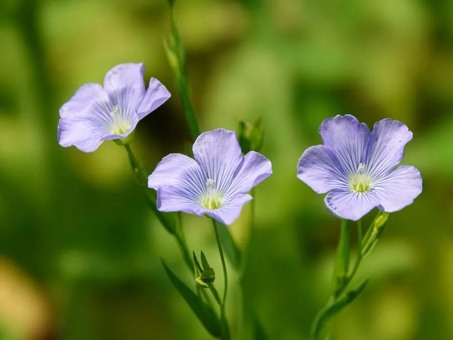

农作物与经济植物 · 植物界
亚麻 Linum usitatissimum

亚麻的茎皮纤维可织成亚麻布，种子可榨油，是重要的纤维与油料两用作物，栽培历史已有五千多年。
- 分类
- 门被子植物门纲双子叶植物纲目金虎尾目科亚麻科属亚麻属
- 栖息环境
- 温带凉爽地区，喜凉爽湿润、光照充足，生长期较短
- 地理分布
- 原产中亚与地中海一带，现主产于中国、俄罗斯、加拿大、印度等地
- 保护级别
- 暂无评估（栽培作物）
物种志
亚麻是一年生草本，株高 0.5–1.2 m，茎直立、细长，上部有分枝。叶片披针形或线形，互生。花蓝色或白色，五瓣，生于枝顶，清晨开放。蒴果球形，内含 10 粒扁卵形种子，种子黄褐色或棕色，富含油脂。按用途分为纤维用亚麻、油用亚麻和兼用亚麻。
亚麻原产中亚与地中海一带，栽培历史已有 5000 多年，是古老的纤维与油料作物。纤维用亚麻茎秆细长，茎皮纤维坚韧、吸湿透气，可织成亚麻布、帆布和窗帘；油用亚麻（胡麻）种子含油约 35%–45%，可榨取亚麻籽油，富含 α-亚麻酸，是重要的保健食用油，也可用于油漆和油墨工业。中国东北是纤维用亚麻的主产区，西北与华北则多油用亚麻。亚麻籽还可作饲料。
形态与习性
- 株高0.5–1.2 m，茎细长
- 花蓝色或白色，五瓣
- 蒴果球形，内含 10 粒种子
- 纤维茎皮纤维可织亚麻布
- 种子含油约 35%–45%，富含 α-亚麻酸
- 类型纤维用、油用与兼用三种
趣味知识
- 亚麻布吸湿透气，是人类最早使用的纺织纤维之一。
- 亚麻籽油富含 α-亚麻酸，是重要的保健食用油。
- 亚麻按用途分为纤维用、油用和兼用三类。